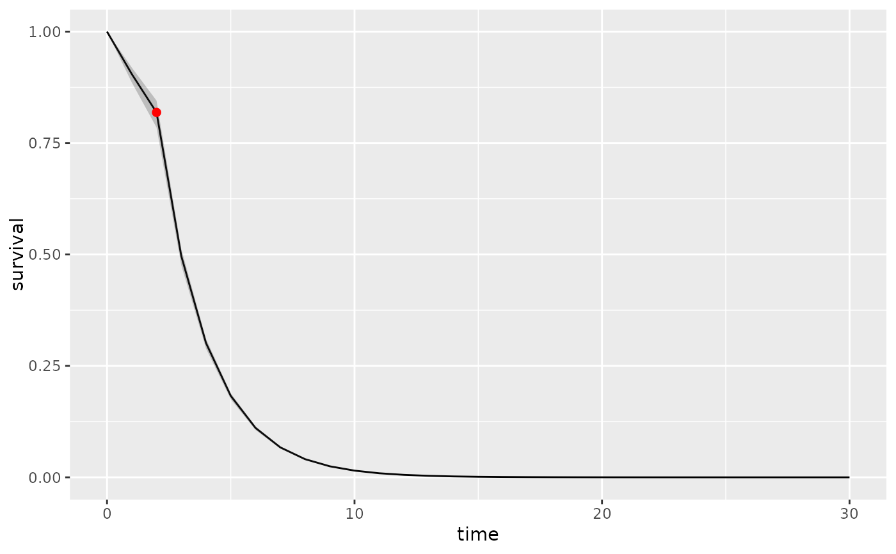

Plot general survival models
Arguments
- x
a survival object of class
surv_aft,surv_add_haz,surv_ph,surv_po,surv_model,surv_pooled, orsurv_projection.- times
Times at which to evaluate and plot the survival object.
- type
either
surv(the default) orprob, depending on whether you want to plot survival from the start or conditional probabilities.- psa
a
define_psaobject- Nrep
The number of replications to estimate the variability of
x- join_opts
A list of 3 graphical parameters for points at which different survival functions are joined: join_col, join_pch and join_size.
- ...
additional arguments to pass to
compute_survfunctions.
Value
a ggplot2::ggplot() object.
Details
The function currently only highlights join points that are at
the top level; that is, for objects with class surv_projection.
To avoid plotting the join points, set join_size to a negative number.
Examples
## Evaluation of the variability of the survival distribution
# \donttest{
surv1 <- define_surv_dist("exp", rate = 0.1)
psa <- define_psa(surv1 ~ resample_surv(n = 100))
plot(surv1, psa=psa)
#> Error in eval(rhs, envir = getOption("heemod.env")): object 'surv1' not found
## plot surv_projection object
surv2 <- define_surv_dist("exp", rate = 0.5)
plot(join(surv1, surv2, at = 2), psa = psa, Nrep = 50)

## surv_fit object
library(survival)
km <- define_surv_fit(survfit(formula = Surv(time, status) ~ 1, data = aml))
fs <- flexsurv::flexsurvreg(formula = Surv(time, status) ~ 1,
data = aml,
dist = "weibull") |>
define_surv_fit()
psa2 <- define_psa(km ~ resample_surv(),
fs ~ resample_surv(),
surv1 ~ resample_surv(100))
plot(km, psa = psa2)
#> No covariates provided, returning aggregate survival across all subjects.
#> Error in eval(rhs, envir = getOption("heemod.env")): object 'km' not found
plot(join(km, surv1, at = 6), psa = psa2)
#> No covariates provided, returning aggregate survival across all subjects.
#> No covariates provided, returning aggregate survival across all subjects.
#> Error in eval(rhs, envir = getOption("heemod.env")): object 'fs' not found
plot(join(fs, surv1, at = 6), psa = psa2)
# }